Home About Me Brands A-Z Restaurants What I've Learned Get Connected
|
J-RJ: Justins- Absolutely great peanut butter, and I am a peanut butter fanatic. Great peanut flavor and it is all natural. My mom always puts their natural peanut butter cups and snickers in my Christmas stocking and I always love them. 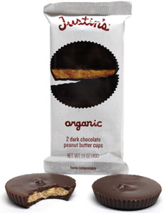 K: Kind- Great granola bars. All natural and so many varieties to chose from. They combine fruit, nuts, and sometimes chocolate which taste great. I have them at school all the time when I need a pick-me up.
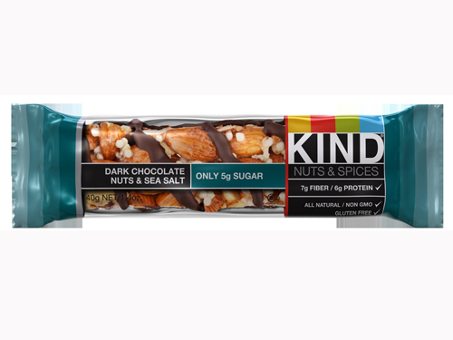 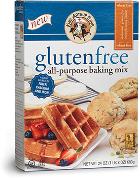 L: Larabar- Another really good granola bar brand; as you can tell these grab-and-go bars are basically what I live on. My favorite kind is Peanut butter chocolate chip. Very filling and tastes great. This brand also is an umbrella for the Uber brand which also makes granola bars. Their roasted nut roll is also tasty.
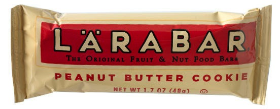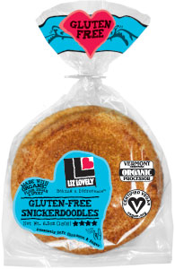 M: Midel- A cookie brand that is pretty well known. The arrowroot cookies, aka animal cookies, taste good and are adorable. Even at 20 years old I still enjoy eating elephants and rhinos. WARNING- The chocholate chip cookies have a sawdust taste to them.
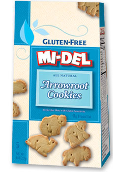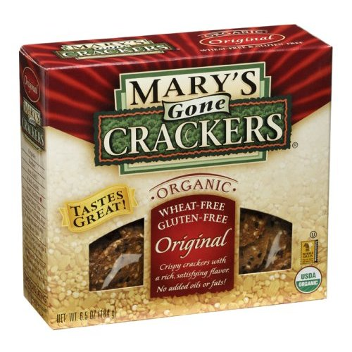 N: Natures Path- GREAT CEREAL. Me and my entire gf family are in love with this brand and it is one of my favorite cereals. The Mesa Sunrise has become part of my family because it’s not too sweet. 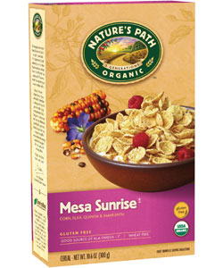 O: Ocean Spray- A well-known brand but it also offers products that us gf people can enjoy. At college I snack on their gummies and love them. Their craisins are also good if you are like me and are not a fan of raisins. 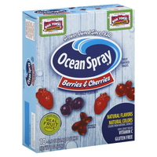 P: Pamelas- AMAZING MIXES. This is the only mix that I use to make pancakes at my house because it is that good. The mix is easy to use and comes out the same as any other bisquick substitute. Love it. 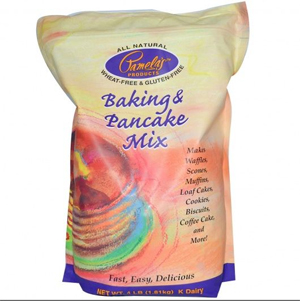 Q: Quaker- An obvious brand that everyone knows. I use their rice cakes and popped chips as snacks at college. I use the normal sea salt cakes in place of sandwich bread with peanut butter in between. You can toast these cakes too so that the texture is more like regular toast. The caramel rice cakes are also a nice treat. Also, the pop chips are another healthy alternative for normal potato chips. 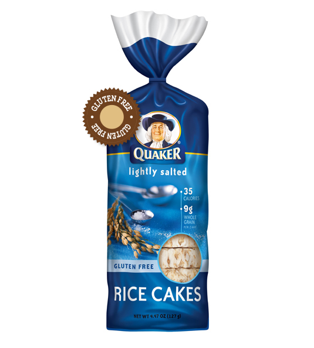 R: Ronzoni- A classic pasta brand that most everyone knows. They have recently come out with some gf varieties that are really quite good. A great introduction to the gf world. 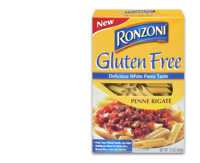 |